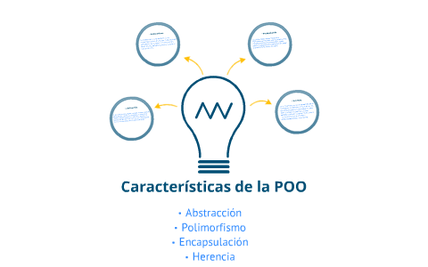

El paradigma de la programación orientada a objetos consiste en la representación de la realidad. En éste se manejan algunos conceptos básicos como son clases, objetos, atributos, métodos y se caracteriza por emplear la abstracción de datos, herencia, encapsulamiento y polimorfismo. Estas características deben ser estudiadas y comprendidas para su aplicación en la programación orientada a objetos.
